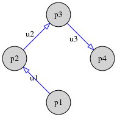
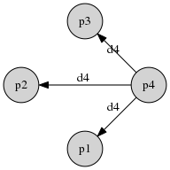
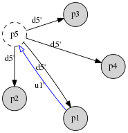

5.2.2. Authenticated Signature Key Exchange (ASKE)¶
As previously noted, we must authenticate the user’s membership in the session, as well as authenticate the content of their messages. This could easily be accomplished by using static private keys to make signatures. However, this destroys any chance that we might have in the future at retaining deniability (also known as repudiability) of ciphertext. Once this property is lost, we can never regain it in a higher layer, and it is critical for confidentiality of metadata, so it is better to retain it here.
Instead, we generate ed25519 ephemeral signing keys for each participant, to be used to authenticate messages for the current session only. We also derive a session ID from participants’ nonces to ensure freshness. At the end of the session the ephemeral private signing key may be published to the transport, allowing for retrospective chat transcript alteration, and therefore allowing repudiation of the contents of transcripts presented post-session. However, our mechanism does not provide deniability of the participation in the authenticated signature key exchange (ASKE) protocol.
Our approach takes some loose inspiration from [06DGKA] and [13DSKE], and may also be compared with [03SPAG] and [12SDGK]. Both are constructions to turn an unauthenticated GKA into an authenticated one. The former construction is not deniable, whereas the latter is fully deniable (including participation in the session) but requires more advanced cryptography (ring signatures) that have not yet seen widespread usage.
Our GKA protocol consists of an upflow (sequential collect) and downflow (broadcast) phase, whereas our ASKE protocol is a constant-round broadcast protocol, as are the other authenticated agreements referenced above. To make our combined protocol easier to understand, the first broadcast round has been serialised into a “collection phase” upflow. The first broadcast of the last member in the chain is the start of the downflow, which is followed by an acknowledgement broadcast by every other participant. Note that these latter broadcasts are not present in our group key agreement.
ASKE consists of three phases. First each participant generates a nonce and an ephemeral signature key pair, and forwards the nonce and public key (upflow). In the second phase – when in possession of all nonces – each member independently computes the shared session ID, and authenticates their ephemeral signing key and session ID using their static private key (downflow). Lastly, each participant verifies all received acknowledgement messages.
5.2.2.1. Initial Protocol Run¶
5.2.2.1.1. Phase 1 – Collection¶
In the first phase the session initiator \(i\) with the participant ID \(\mathsf{pid}_i\) compiles an ordered list of all group members (their participant IDs). Additionally an empty list for the all participants’ nonces and ephemeral public keys is initialised.
The initiator then generates a nonce \(k_i\) and an ephemeral signature key pair \((e_i, E_i)\). They add these to the nonces and public keys lists. They then send the participants’ list (\(\mathsf{pid}_i\)), nonces list (\(k_i\)) and public keys list (\(E_i\)) on to the next member in the list, who again generates a nonce and ephemeral signature key pair to send on.
This phase ends with the last member in the list to add their contributions. This last member is the initiator of the second phase.
Example:
The following figure shows the sequence of upflow messages (\(u_i\)) sent among four participants (\(p_i\)).

- \(u1\) contains:
- Participants: \((p1,\; p2,\; p3,\; p4)\)
- Nonces: \((k_1)\)
- Ephemeral public signing keys: \((E_1)\)
- \(u2\) contains:
- Participants: \((p1,\; p2,\; p3,\; p4)\)
- Nonces: \((k_1,\; k_2)\)
- Ephemeral public signing keys: \((E_1,\; E_2)\)
- \(u3\) contains:
- Participants: \((p1,\; p2,\; p3,\; p4)\)
- Nonces: \((k_1,\; k_2,\; k_3)\)
- Ephemeral public signing keys: \((E_1,\; E_2,\; E_3)\)
5.2.2.1.2. Phase 2 – Acknowledgement¶
The initiator of the downflow in the acknowledgement phase first constructs an authenticator message from their own contributions:
Here, \(\mathsf{CTX}\) is a fixed byte sequence to prevent the signature
being used in another application; for this protocol version we use acksig.
\(\mathsf{sid}\) is the session ID, calculated from all participant IDs
and nonces using a hash function \(H\):
The IDs and nonces must be strictly ordered. For mpENC on the Mega platform the participant IDs are the full XMPP JIDs, and sorting is performed in lexical order. The nonces are ordered so as to correspond to their participant IDs.
Then, the initiator broadcasts the first message in the downflow, containing the now-completed lists of participants (\(\mathsf{pid}_i\)), nonces (\(k_i\)) and public keys (\(E_i\)), for all \(i\), along with a signature of their own authenticator message \(\sigma_{s_i}(m_i)\) computed with the static identity signature key \((s_i, S_i)\). The purpose of this is to authenticate all information contributed by the signing participant, as well as what they believe the contributions of all session members to be. [1] Note that the authenticator message itself needs not be, and is not, broadcast.
After receiving this, every participant is in possession of the information required to calculate the supposed \(\mathsf{sid}\) for themselves, produce what each \(m_i\) should be and verify the \(\sigma_{s_i}(m_i)\) that it should have based on this information.
Now, each participant computes the session ID (\(\mathsf{sid}\)) from the content of this initial broadcast message, checking that the values supposedly contributed by them actually match what they output during the upflow phase. Then, they generate their own authenticator message, corresponding signature, and broadcast this signature to others. The lists of intermediate values are not necessary in these further broadcasts.
Example:
The following figure shows the corresponding downflow message (\(d4\)) broadcast to all participants by \(p4\).

- \(d4\) contains:
- Participants: \((p1,\; p2,\; p3,\; p4)\)
- Nonces: \((k_1,\; k_2,\; k_3,\; k_4)\)
- Ephemeral public signing keys: \((E_1,\; E_2,\; E_3,\; E_4)\)
- Session signature: \(\sigma_{s_4}(m_4)\)
Upon receipt of \(d4\) every other participant sends out an analogous \(dX\) message including their own session signature.
| [1] | Although \(k_i\) is already “contained in” the session ID, we explicitly add it to \(m_i\), to avoid depending on the security of its calculation. This is hoped to simplify any future formal analysis. |
5.2.2.1.3. Phase 3 – Verification¶
This last phase does not require further messages to be sent. Each participant verifies the content of each received acknowledgement broadcast message against their own available information. The purpose is to have the assurance that all participants are actively participating (avoids replays) with a fresh session, and to have the assurance that the session’s ephemeral signing keys are really from the users that one is communicating with.
More specifically, as each participant receives each subsequent downflow broadcast from \(\mathsf{pid}_i\), they compute \(m_i\) from the same information used to compute their local value for \(\mathsf{sid}\), and verify the signature contained in the received message (which is supposed to be \(\sigma_{s_i}(m_i)\)) using the sender’s long term static key \(S_i\).
The protocol completes successfully when all session signatures from all other participants have been successfully verified against the local session ID and each participant’s static identity signature key.
Following successful completion, only the ephemeral keys are needed for message authentication – signing with the static keys would effectively inhibit any plausible deniability. However the static keys are needed for further changes to the session membership.
5.2.2.2. Auxiliary Protocol Runs¶
Upon changing the participant composition of the chat (inclusions or exclusions of members) some session information changes: The list of participants, nonces and ephemeral signing keys. Therefore, the session ID also changes.
5.2.2.2.1. Member Inclusion¶
To include participants, the initiator extends the list of participants by the new participant(s). A new collection (upflow) message is sent to the (first) new participant, including the new list of participants \(p_i\) and already existing nonces \(k_i\) and ephemeral signing keys \(E_i\). The collection upflow percolates through all new participants, and the last one will initiate a new acknowledgement downflow phase followed by a verification phase identically to the initial protocol flow as outlined above.
Example:
The following figure shows addition of a participant (\(p5\)) – initiated by \(p1\) – to the existing group of four participants.

- \(u1'\) contains:
- Participants: \((p1,\; p2,\; p3,\; p4,\; p5)\)
- Nonces: \((k_1,\; k_2,\; k_3,\; k_4)\)
- Ephemeral public signing keys: \((E_1,\; E_2,\; E_3,\; E_4)\)
- \(d5'\) contains:
- Participants: \((p1,\; p2,\; p3,\; p4,\; p5)\)
- Nonces: \((k_1,\; k_2,\; k_3,\; k_4,\; k_5)\)
- Ephemeral public signing keys: \((E_1,\; E_2,\; E_3,\; E_4,\; E_5)\)
- Session signature: \(\sigma_{s_5}(m_5)\)
After receiving this message, \(p1\) through \(p4\) will likewise broadcast their acknowledgement messages to all participants as well as verify all received session signatures \(\sigma_{s_i}(m_i)\).
5.2.2.2.2. Member Exclusion¶
On member exclusion, the process is simpler as it does not require a collection (upflow) phase, as all remaining participants have announced already. The initiator of the exclusion removes the excluded participant(s) from the list of participants, and their respective nonces and ephemeral signing keys are as well removed.
Importantly, the initiator must update their own nonce to prevent collisions in the session ID \(\mathsf{sid}\) with a previous session ID consisting of the same set of participants. They then compute a new session ID and session signature \(\sigma_{s_i}(m_i)\) from these updated values, and used them to directly broadcast the initial downflow message to all remaining participants. Each of them again verifies all session signatures and broadcasts their own acknowledgement (if still outstanding).
5.2.2.2.3. Key Refresh¶
The concept of a key refresh for ASKE is currently not considered.
5.2.2.3. Member Departure¶
As with our GKA, our ASKE does not include a member departure operation, this instead being handled in a different part of the wider protocol.
In the future, our departure mechanism will include publishing the ephemeral signature key, to support a limited form of ciphertext deniability. This is described more in Publish signature keys.